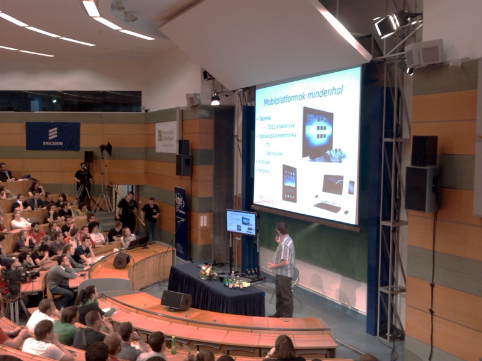

Simonyi Konferencia 2011
Idén először úgy döntöttem, hogy megnézem ezt a konferenciát. A nyitó momentumok kimaradtak, mivel 14:00-ig órám volt, de aztán jött az Ethical Hacking Papp Péter előadásában. Egy csöppet több szakmai részletet vártam, hiszen már javított, nem támadható megoldásokról volt szó, de így is remek előadás volt. Maradtam a magyar teremben utána (két teremben párhuzamosan zajlott), Kőnig Tibor folytatta a felhők "big picture" jellegű bemutatásával, örvendetes, hogy nem tűnt Microsoft reklámnak a mondandója. Két blokkot kihagyva Kis Gergely Mobilplatformjaira tértem vissza, ahol kevésbé volt pörgős és magával ragadó a külcsín, de nagyon korrekt összefoglalását hallhattuk a témának.

Bár sok újdonságot nem tudtam meg: az Android dömpingszerűen feltör, az Apple-t sem lehet leírni, pláne, hogy abban van a pénz jelenleg.
A konferencia abszolút csúcsa számomra Dr. Joseph Reger nagyívű fejtegetése volt, amiben megtudhattuk, hogy a teremben ülők jó része 10 év múlva nem a mai, klasszikus, kissé magának élő IT-ben fog dolgozni. Eljön a commodity IT, szabványos és olcsó, a core IT-hez nem fog kelleni az a szakemberhadsereg, akik kikerülnek manapság computer engineering diplomával? Az előadó szerint az ő lehetőségük más szakterületen (mezőgazdaság, egészségügy, stb) specifikus tudás megszerzése, "just use it".
A legvégén Kertész Zoltán előadásának második felére csődült át a társaság az angol teremből, ahol vicces sztorikat hallgathattunk végfelhasználók adatmentési kísérleteiről. Megtudtuk továbbá, hogy a macskával ellentétben a merevlemezeknek nem árt a mikrohullámú sütő, pontosabban a Kürt munkájában nem sok vizet zavar a véghezvitt rombolás :)
- Tovább (Simonyi Konferencia 2011)
- 2 hozzászólás
- A hozzászóláshoz regisztráció és bejelentkezés szükséges